Anlage 8 Bezeichnung der Wasserstraße
Binnenschifffahrtsstraßen-Ordnung
I. Allgemeines
1. Schifffahrtszeichen Schifffahrtszeichen zur Bezeichnung der Wasserstraße, der Fahrrinne und von gefährlichen Stellen und Hindernissen im und am Fahrwasser werden nicht durchgehend gesetzt. Ein schwimmendes Schifffahrtszeichen wird etwa 5 m außerhalb der zu bezeichnenden Begrenzungen verankert. Eine Buhne oder ein Parallelwerk kann durch ein schwimmendes oder festes Schifffahrtszeichen bezeichnet sein. Dieses ist im Allgemeinen vor, zwischen oder auf dem Buhnenkopf und Parallelwerk angebracht. Von einem Schifffahrtszeichen muss ein ausreichender Abstand gehalten werden, da sonst Gefahr besteht, zu raken oder aufzulaufen. Ein Schifffahrtszeichen kann mit Taktfeuer ergänzt werden. Trotz aller Vorsichtsmaßnahmen der zuständigen Behörde kann es zur Beeinträchtigung eines Schifffahrtszeichens kommen; eine Tonne kann versenkt oder abgetrieben werden, ein Feuer kann durch äußere Einwirkungen zum Erlöschen kommen. Bei Hochwasser oder Eisgang kann die Betonnung vorübergehend eingezogen werden. Den Schifffahrttreibenden obliegt es, bei der Benutzung der Schifffahrtszeichen diese Risiken zu beachten.
2. Begriffe
Feuer: | Licht mit Kennung, das der Befeuerung dient. | ||||
Festfeuer: | Ununterbrochene Lichterscheinung von gleichbleibender Stärke und Farbe. | ||||
Taktfeuer: | Ein in kennzeichnendem Rhythmus aufleuchtendes Feuer mit regelmäßiger Wiederkehr. | ||||
Es werden verwendet: | |||||
- | ununterbrochenes Feuer mit Einzelunterbrechung: Ubr. | 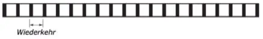 | |||
oder | |||||
mit Gruppen von Unterbrechungen Beispiel: 2 Unterbrechungen: Ubr. (2) | 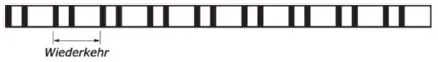 | ||||
- | Gleichtaktfeuer: Glt. | 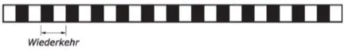 | |||
- | Blitzfeuer mit Einzelblitzen: Blz. | 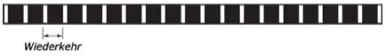 | |||
oder | |||||
mit Gruppen von 2 Blitzen: Blz. (2) | 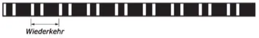 | ||||
oder | |||||
mit Gruppen von 2 + 1 Blitzen: Blz. (2+1) | 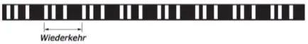 | ||||
- | Funkelfeuer mit dauerndem Funkel: Fkl. | ||||
oder | |||||
mit Gruppen von Funkeln | |||||
Beispiel: 3 Funkel: Fkl. (3) | |||||
Beispiel: 9 Funkel: Fkl. (9) | 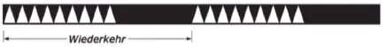 | ||||
oder | |||||
mit Gruppen von Funkeln und 1 Blink | 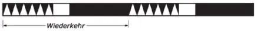 | ||||
Beispiel: 6 Funkel + 1 Blink: Fkl. (6) + Blk. | |||||
- | Schnelles Funkelfeuer mit dauerndem schnellen Funkel: SFkl. | 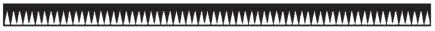 | |||
oder | |||||
mit Gruppen von schnellen Funkeln | 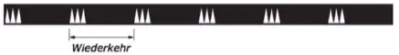 | ||||
Beispiel: 3 schnelle Funkel: SFkl. (3) | |||||
Beispiel: 9 schnelle Funkel: SFkl. (9) | 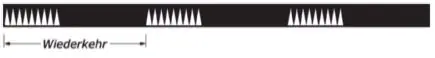 | ||||
oder | |||||
mit Gruppen von schnellen Funkeln und 1 Blink | 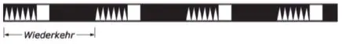 | ||||
Beispiel: 6 schnelle Funkel + 1 Blink: SFkl. (6) + Blk. | |||||
Ein Funkelfeuer wird mit 60 Lichterscheinungen/Minute und ein schnelles Funkelfeuer mit 100 bis 120 Lichterscheinungen/ Minute ausgesendet. Ein Blink wird als Lichterscheinung von mehr als zwei Sekunden Dauer sichtbar. | |||||
Ein Feuer mit Einzelunterbrechung oder Einzelblitzen und mit Gruppen von drei Unterbrechungen oder drei Blitzen wird als Feuer mit ungerader Kennung bezeichnet. Ein Feuer mit Gruppen von zwei und vier Unterbrechungen oder Blitzen wird als Feuer mit gerader Kennung bezeichnet. | |||||
II. Bezeichnung der Fahrrinne | |||||
1. | Rechte Seite | ||||
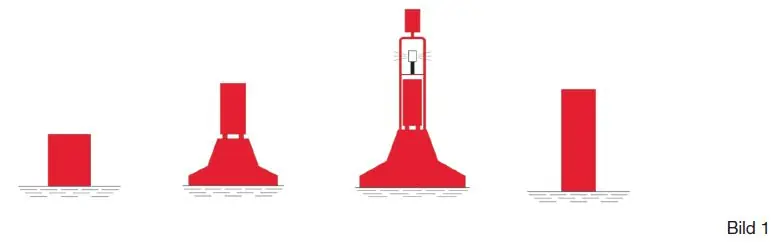 | |||||
Farbe: | rot | ||||
Form: | Stumpftonne, Tonne mit Toppzeichen, Leuchttonne, Schwimmstange (Spiere) | ||||
Toppzeichen (wenn vorhanden): | roter Zylinder (in der Regel als Radarreflektor) | ||||
Feuer (wenn vorhanden): | rotes Taktfeuer | ||||
2. | Linke Seite | ||||
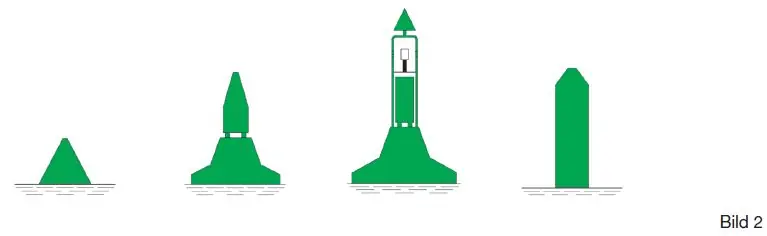 | |||||
Farbe: | grün | ||||
Form: | Spitztonne, Tonne mit Toppzeichen, Leuchttonne, Schwimmstange (Spiere) | ||||
Toppzeichen (wenn vorhanden): | grüner Kegel - Spitze oben - (in der Regel als Radarreflektor) | ||||
Feuer (wenn vorhanden): | grünes Taktfeuer | ||||
3. | Spaltung | ||||
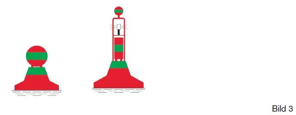 | |||||
Farbe: | rot-grün waagerecht gestreift | ||||
Form: | Tonne mit Toppzeichen, Leuchttonne | ||||
Toppzeichen (wenn vorhanden): | rot-grün waagerecht gestreifter Ball (in der Regel als Radarreflektor) | ||||
Feuer (wenn vorhanden): | weißes Funkel- oder Gleichtaktfeuer: Fkl. oder Glt. | ||||
Erforderlichenfalls zeigt ein rotes zylinderförmiges oder ein grünes kegelförmiges Toppzeichen über dem Zeichen für die Fahrrinnenspaltung an, an welcher Seite die Vorbeifahrt erfolgen soll. | |||||
4. | Abzweigung, Einmündung, Hafeneinfahrt | ||||
4.1 | Rechte Seite der durchgehenden Fahrrinne/linke Seite der abzweigenden oder einmündenden Fahrrinne | ||||
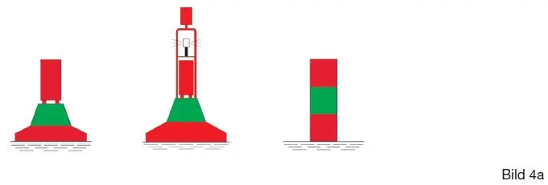 | |||||
Farbe: | rot mit einem grünen waagerechten Streifen | ||||
Form: | Tonne mit Toppzeichen, Leuchttonne, Schwimmstange (Spiere) | ||||
Toppzeichen (wenn vorhanden): | roter Zylinder (in der Regel als Radarreflektor) | ||||
Feuer (wenn vorhanden): | rotes Blitzfeuer: Blz. (2+1) | ||||
4.2 | Linke Seite der durchgehenden Fahrrinne/rechte Seite der abzweigenden oder einmündenden Fahrrinne | ||||
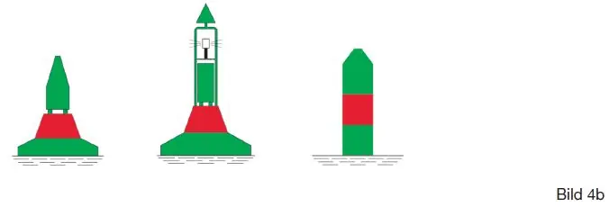 | |||||
Farbe: | grün mit einem roten waagerechten Streifen | ||||
Form: | Tonne mit Toppzeichen, Leuchttonne, Schwimmstange (Spiere) | ||||
Toppzeichen (wenn vorhanden): | grüner Kegel - Spitze oben - (in der Regel als Radarreflektor) | ||||
Feuer (wenn vorhanden): | grünes Blitzfeuer: Blz. (2+1) | ||||
Die Positionen rechte Seite der durchgehenden Fahrrinne/rechte Seite der abzweigenden oder einmündenden Fahrrinne und linke Seite der durchgehenden Fahrrinne/linke Seite der abzweigenden oder einmündenden Fahrrinne werden mit den Zeichen nach Bild 1 und Bild 2 bezeichnet. | |||||
5. | Zusammenspiel der Bilder 1 bis 3 (Beispiel): | ||||
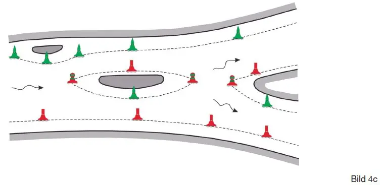 | |||||
III. Bezeichnung der Wasserstraße sowie eines Hindernisses in oder an der Wasserstraße | |||||
A. | Feste Zeichen | ||||
1. | Rechte Seite | ||||
Farbe: | rot | 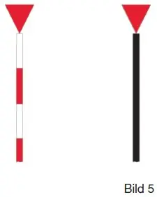 | |||
Form: | Stange mit Toppzeichen | ||||
Toppzeichen: | roter Kegel - Spitze unten - (in der Regel als Radarreflektor) | ||||
Feuer (wenn vorhanden): | rotes Taktfeuer | ||||
2. | Linke Seite | ||||
Farbe: | grün | 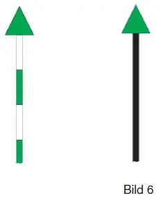 | |||
Form: | Stange mit Toppzeichen | ||||
Toppzeichen: | grüner Kegel - Spitze oben - (in der Regel als Radarreflektor) | ||||
Feuer (wenn vorhanden): | grünes Taktfeuer | ||||
3. | Spaltung | ||||
Farbe: | rot-grün | 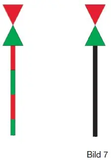 | |||
Form: | Stange mit Toppzeichen | ||||
Toppzeichen: | roter Kegel - Spitze unten - über grünem Kegel - Spitze oben - (in der Regel als Radarreflektor) | ||||
Feuer (wenn vorhanden): | weißes Funkel- oder Gleichtaktfeuer: Fkl. oder Glt. | ||||
4. | Abzweigung, Einmündung, Hafeneinfahrt | ||||
Im Bereich einer Abzweigung, Einmündung und Hafeneinfahrt kann für jede Seite der Wasserstraße die Ufersicherung bis zur Trennspitze durch die unter den Nummern 1 und 2 (Bilder 5 und 6) gezeigten festen Schifffahrtszeichen gekennzeichnet werden. Die Fahrt von der Hafeneinfahrt in den Hafen gilt als Bergfahrt. | |||||
B. | Schwimmende Zeichen (nur zur Bezeichnung eines Hindernisses) | ||||
1. | Rechte Seite | ||||
Farbe: | rot-weiß waagerecht gestreift | 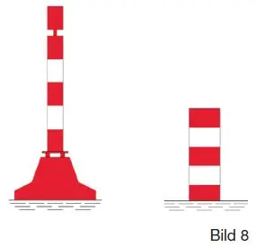 | |||
Form: | Spierentonne mit Toppzeichen, Schwimmstange (Spiere), in der Regel jeweils mit Radarreflektor | ||||
Toppzeichen (wenn vorhanden): | roter Zylinder | ||||
Feuer (wenn vorhanden): | rotes Taktfeuer | ||||
2. | Linke Seite | ||||
Farbe: | grün-weiß waagerecht gestreift | 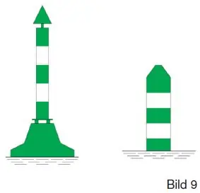 | |||
Form: | Spierentonne mit Toppzeichen, Schwimmstange (Spiere), in der Regel jeweils mit Radarreflektor | ||||
Toppzeichen (wenn vorhanden): | grüner Kegel - Spitze oben - | ||||
Feuer (wenn vorhanden): | grünes Taktfeuer (in der Regel mit Radarreflektor) | ||||
C. | Zusammenspiel der Bilder 5 bis 9 mit A.4 (Beispiel) | ||||
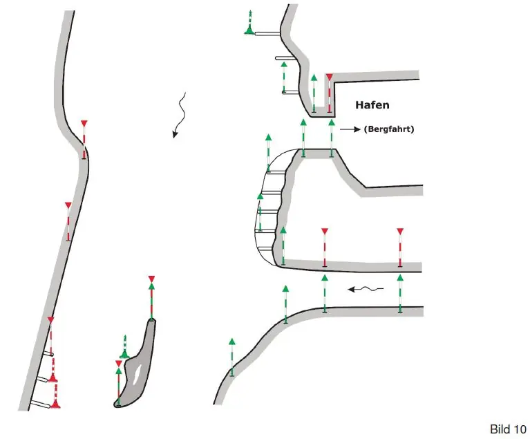 | |||||
IV. Weitere Möglichkeiten zur Bezeichnung einer gefährlichen Stelle und eines Hindernisses in der Wasserstraße | |||||
1. | Vorbeifahrt ohne Herabsetzung der Geschwindigkeit auf der freien Seite zugelassen | ||||
bei Nacht | bei Tag | ||||
gesperrte Seite | gesperrte Seite | ||||
Verbotszeichen A.1 | |||||
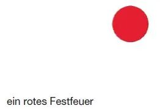 | 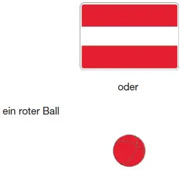 | ||||
freie Seite | freie Seite | ||||
Hinweiszeichen E.1 | |||||
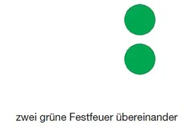 | 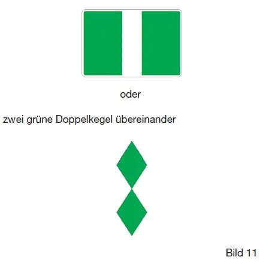 | ||||
bei Nacht | bei Tag | ||||
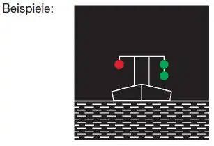 | 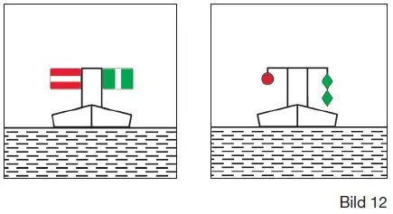 | ||||
2. | Vorbeifahrt nur mit Herabsetzung der Geschwindigkeit auf der freien Seite zugelassen (Wellenschlag vermeiden) | ||||
bei Nacht | bei Tag | ||||
gesperrte Seite | gesperrte Seite | ||||
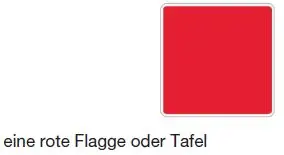 | |||||
freie Seite | freie Seite | ||||
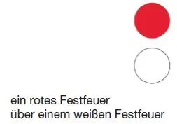 | 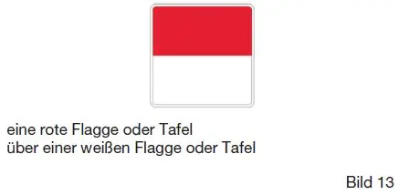 | ||||
bei Nacht | bei Tag | ||||
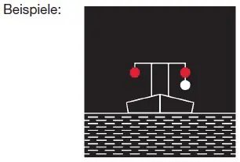 | 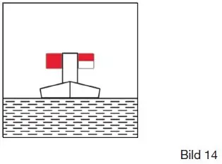 | ||||
V. Zusätzliche Zeichen für die Radarschifffahrt (falls erforderlich) | |||||
A. | Bezeichnung eines Radarzieles | ||||
1. | Farbe: | gelb | |||
Form: | Tonne mit Toppzeichen als Radarreflektor Schwimmstange (Spiere) mit Toppzeichen als Radarreflektor | ||||
jeweils z.B. oberhalb oder unterhalb eines Brückenpfeilers ausgelegt | |||||
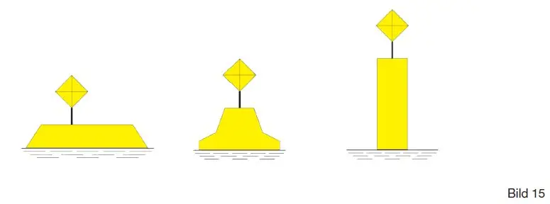 | |||||
2. | Stange mit Radarreflektor (oberhalb und unterhalb eines Brückenpfeilers) | ||||
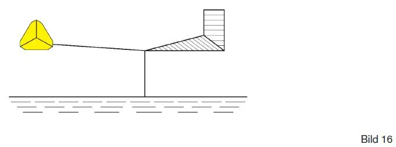 | |||||
B. | Bezeichnung einer Freileitung | ||||
1. | Radarreflektoren an Freileitung befestigt (ergeben im Radarbild eine Punktreihe zur Identifizierung der Freileitung) | ||||
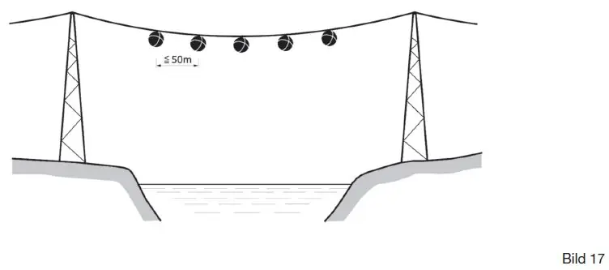 | |||||
2. | Radarreflektoren auf gelben Tonnen an beiden Ufern paarweise ausgelegt (ergeben im Radarbild je zwei nebeneinander liegende Punkte zur Identifizierung der Freileitung) | ||||
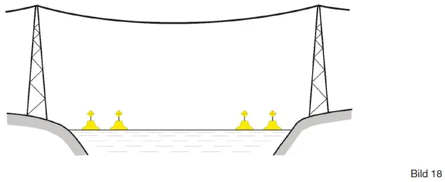 | |||||
VI. Bezeichnung der Lage der Fahrrinne zum Ufer sowie des Übergangs der Fahrrinne von einem zum anderen Ufer | |||||
A. | Lage der Fahrrinne zum Ufer | ||||
1. | Rechte Seite | ||||
Farbe: | rot/weiß | 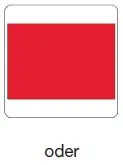 | |||
Form: | Stange mit Toppzeichen | ||||
Toppzeichen: | rote quadratische Tafel mit weißen waagerechten Streifen am oberen und unteren Rand | ||||
oder | |||||
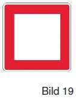 | |||||
roter quadratischer Lattenrahmen | |||||
Feuer (wenn vorhanden): | rotes Taktfeuer | ||||
2. | Linke Seite | ||||
Farbe: | grün/weiß | 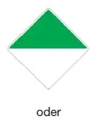 | |||
Form: | Stange mit Toppzeichen | ||||
Toppzeichen: | auf der Spitze stehende quadratische Tafel, obere Hälfte grün, untere Hälfte weiß | ||||
oder | |||||
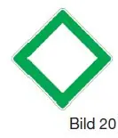 | |||||
grüner quadratischer auf der Spitze stehender Lattenrahmen | |||||
Feuer (wenn vorhanden): | grünes Taktfeuer | ||||
3. | Zusammenspiel der Bilder 19 und 20 (Beispiel) | ||||
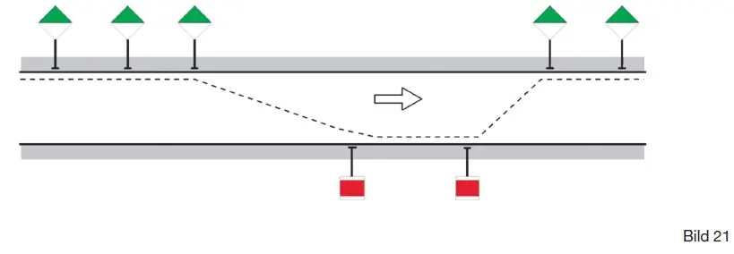 | |||||
B. | Übergang der Fahrrinne von einem zum anderen Ufer | ||||
1. | Rechte Seite | ||||
Farbe: | gelb/schwarz | 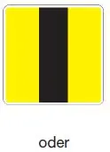 | |||
Form: | Stange mit Toppzeichen | ||||
Toppzeichen: | gelbe quadratische Tafel mit einem senkrechten schwarzen Mittelstreifen | ||||
oder | |||||
gelbes stehendes Lattenkreuz | 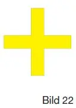 | ||||
2. | Linke Seite | ||||
Farbe: | gelb/schwarz | 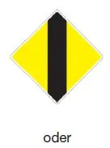 | |||
Form: | Stange mit Toppzeichen | ||||
Toppzeichen: | gelbe auf der Spitze stehende quadratische Tafel mit einem senkrechten schwarzen Mittelstreifen | ||||
oder | |||||
gelbes liegendes Lattenkreuz | 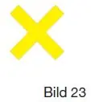 | ||||
3. | Zusammenspiel der Bilder 22 und 23 (Beispiele) | ||||
3.1 | Bezeichnung durch Einzelbaken | ||||
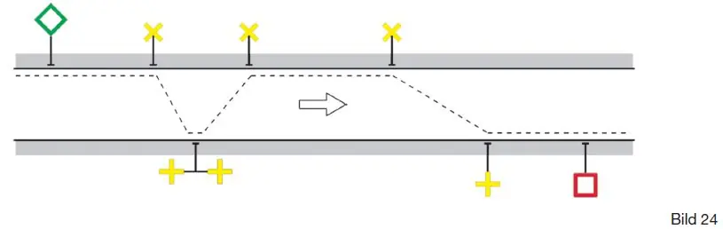 | |||||
Feuer (wenn vorhanden): | linke Seite: | gelbes Taktfeuer mit ungerader Kennung | |||
rechte Seite: | gelbes Taktfeuer mit gerader Kennung | ||||
3.2 | Bezeichnung durch Richtbaken | ||||
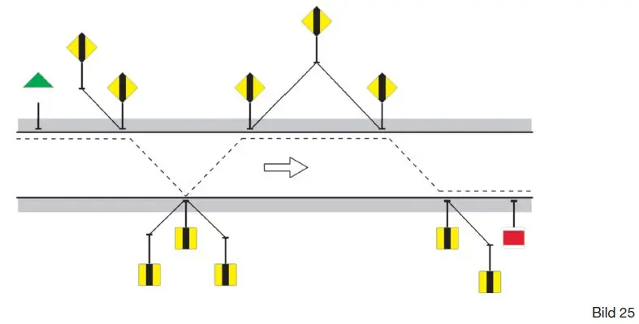 | |||||
Ein Richtbakenpaar besteht aus Ober- und Unterbake. Sie bezeichnen in Deckpeilung die Richtung des Überganges. Die Oberbake steht vom Schiff aus gesehen hinter der Unterbake und ist höher als diese. | |||||
Feuer (wenn vorhanden): | beide Seiten | Unterfeuer: | gelbes Gleichtaktfeuer | ||
Oberfeuer: | gleichgängig mit Unterfeuer oder gelbes Festfeuer | ||||
VII. Zusätzliche Bezeichnung für einen See und eine seeartige Erweiterung | |||||
A. | Bezeichnung einer gefährlichen Stelle und eines Hindernisses | ||||
1. | Kardinalzeichen | ||||
Eine allgemeine Gefahrenstelle (z. B. Untiefe, Wrack, Buhne und sonstiges Schifffahrtshindernis) ist in der Regel mit einem oder mehreren Kardinalzeichen bezeichnet, die für die verschiedenen Quadranten den Bezug zur Lage der Gefahrenstelle angeben. | |||||
1.1 | Definition der Quadranten und Kardinalzeichen | ||||
Die vier Quadranten (Nord, Ost, Süd und West) werden durch die vom Bezugspunkt ausgehenden Richtungen NW-NO, NO-SO, SO-SW und SW-NW begrenzt. | |||||
Ein Kardinalzeichen wird nach dem Quadranten benannt, in dem es liegt. | |||||
Der Name des Kardinalzeichens sagt aus, dass an der Seite des Zeichens vorbeigefahren werden soll, nach der es benannt ist. | |||||
1.2 | Beschreibung der Kardinalzeichen | ||||
Nord-Kardinalzeichen | |||||
Farbe: | schwarz über gelb | ||||
Form: | Spierentonne mit Toppzeichen, Schwimmstange (Spiere) mit Toppzeichen | ||||
Toppzeichen: | zwei schwarze Kegel übereinander - Spitzen oben - | ||||
Feuer (wenn vorhanden): | weißes Funkelfeuer Fkl. oder weißes Schnelles Funkelfeuer SFkl. | ||||
Ost-Kardinalzeichen | |||||
Farbe: | schwarz mit einem breiten gelben waagerechten Streifen | ||||
Form: | Spierentonne mit Toppzeichen, Schwimmstange (Spiere) mit Toppzeichen | ||||
Toppzeichen: | zwei schwarze Kegel übereinander - Spitzen voneinander - | ||||
Feuer (wenn vorhanden): | weißes Funkelfeuer Fkl. (3) oder weißes Schnelles Funkelfeuer SFkl. (3) | ||||
Süd-Kardinalzeichen | |||||
Farbe: | gelb über schwarz | ||||
Form: | Spierentonne mit Toppzeichen, Schwimmstange (Spiere) mit Toppzeichen | ||||
Toppzeichen: | zwei schwarze Kegel übereinander - Spitzen unten - | ||||
Feuer (wenn vorhanden): | weißes Funkelfeuer Fkl. (6) + Blk. oder weißes Schnelles Funkelfeuer SFkl. (6) + Blk. | ||||
West-Kardinalzeichen | |||||
Farbe: | gelb mit einem breiten schwarzen waagerechten Streifen | ||||
Form: | Spierentonne mit Toppzeichen, Schwimmstange (Spiere) mit Toppzeichen | ||||
Toppzeichen: | zwei schwarze Kegel übereinander - Spitzen zueinander - | ||||
Feuer (wenn vorhanden): | weißes Funkelfeuer Fkl. (9) oder weißes Schnelles Funkelfeuer SFkl. (9) | ||||
2. | Einzelgefahrzeichen | ||||
Ein Einzelgefahrzeichen wird errichtet oder ausgelegt über einer Einzelgefahr. Die Gefahrenstelle kann an allen Seiten passiert werden. | |||||
Farbe: | schwarz mit einem oder mehreren breiten roten waagerechten Streifen | ||||
Form: | Spierentonne mit Toppzeichen, Schwimmstange (Spiere) mit Toppzeichen | ||||
Toppzeichen: | zwei schwarze Bälle übereinander | ||||
Feuer (wenn vorhanden): | weißes Blitzfeuer Blz. (2) | ||||
B. | Bezeichnung der Mitte eines Fahrwassers, einer Fahrwasserstrecke, einer Ansteuerung sowie einer Fahrwassereinfahrt | ||||
1. | Mittefahrwasserzeichen | ||||
An beiden Seiten des Mittefahrwasserzeichens ist eine der zugelassenen Abladetiefe entsprechende Wassertiefe vorhanden. | |||||
Farbe: | rot-weiß senkrecht gestreift | ||||
Form: | Tonne mit Toppzeichen (in der Regel als Radarreflektor) | ||||
Toppzeichen: | roter Ball | ||||
Feuer (wenn vorhanden): | weißes Taktfeuer: Ubr., Glt. oder Blz. | ||||
2. | Zusätzliche Bezeichnung einer Fahrwasserstrecke und einer Ansteuerung | ||||
Ein Leitfeuer ist ein Einzelfeuer, das durch Sektoren verschiedener Farbe und Kennung im Allgemeinen ein Fahrwasser, eine Hafeneinfahrt oder einen freien Seeraum zwischen Untiefen bezeichnet. Die Fahrwasserstrecke ist identisch mit dem weißen Sektor des Leitfeuers. | |||||
Feuer: | weißes Taktfeuer: Ubr. oder Glt. mit Warnsektoren rot und grün. | ||||
3. | Einfahrtzeichen | ||||
Das Einfahrtzeichen dient der Kennzeichnung von Einfahrten von einem See oder einer seeartigen Erweiterung in einen verhältnismäßig engeren Wasserstraßenabschnitt. | |||||
Farbe: | weiß-schwarz gestreift oder schwarz-weiß gestreift | ||||
Form: | Stange mit Toppzeichen | ||||
Toppzeichen: | rechtes Ufer: | Raute aus senkrechtem Lattenwerk | |||
linkes Ufer: | Raute aus waagerechtem Lattenwerk | ||||
Feuer (wenn vorhanden): | rechtes Ufer: | rotes Taktfeuer | |||
linkes Ufer: | grünes Taktfeuer | ||||
4. | Zusammenspiel der Bilder 26 bis 31 und Bild 34 (Beispiel) | ||||
VIII. Bezeichnung einer besonderen Wasserfläche | |||||
1. | Tonnen für eine gesperrte Wasserfläche | ||||
Gelbe Stumpftonnen (Bild 33) oder gelbe Tonnen (Bild 34) mit oder ohne Radarreflektoren oder mit oder ohne Toppzeichen kennzeichnen eine gesperrte Wasserfläche. Als Toppzeichen können insbesondere die Zeichen nach Anlage 7 in Form von Tafeln oder Zylindern verwendet werden. | |||||
2. | Tonnen für sonstige Zwecke | ||||
Weiße Tonnen können zu anderen als den vorgenannten Zwecken verwendet werden. Als Toppzeichen können insbesondere die Zeichen nach Anlage 7 in Form von Tafeln oder Zylindern verwendet werden. | |||||